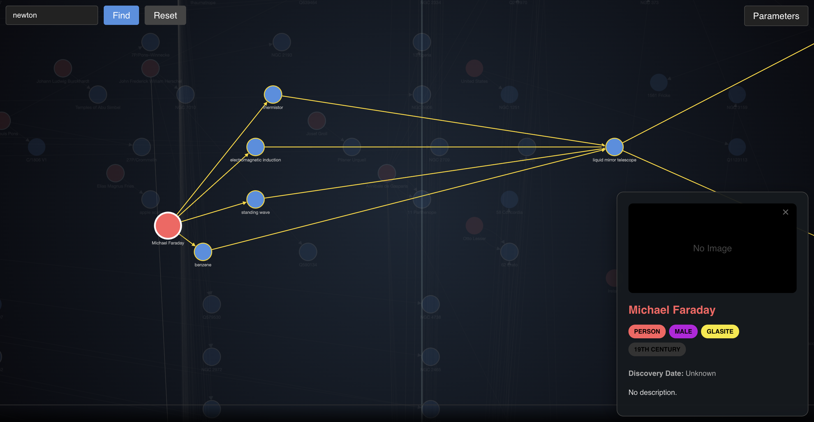
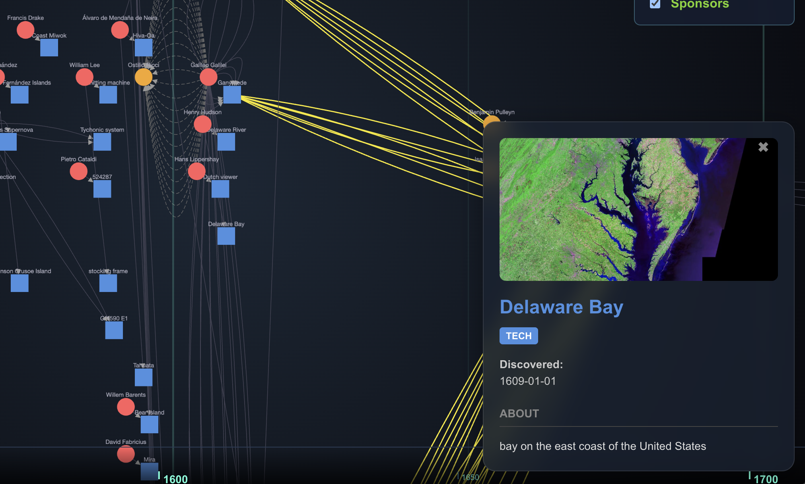
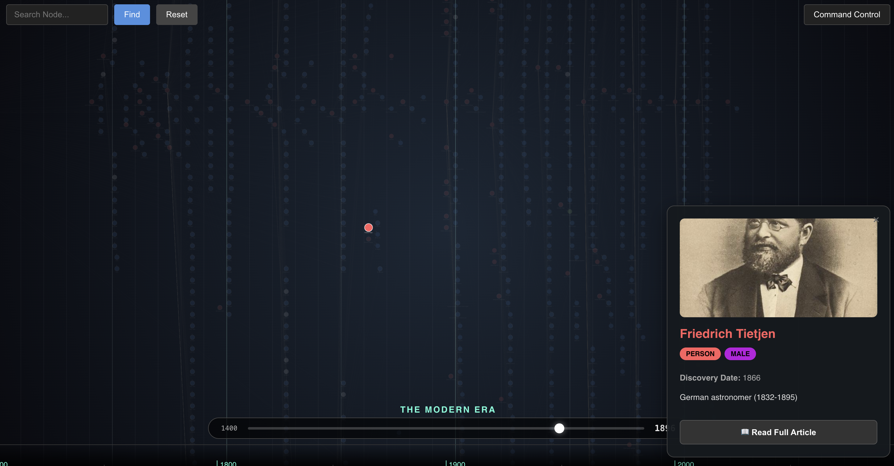
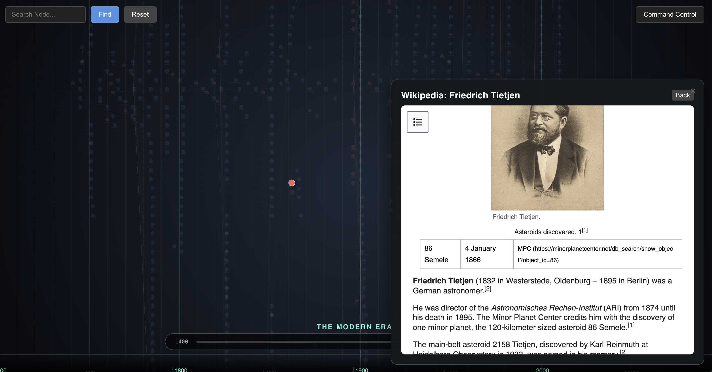

< previous
tree of all
tree of all
knowledge
visualization engine + encyclopedia
an interactive encyclopedia designed to visualize the evolution of technology and human knowledge + a graph-based system allowing users to traverse history through nodes + connections + and timelines
integrates real-time data from wikipedia to generate living networks of discovery + mapping the unseen links between inventors + eras + and machines
source + extraction
- /src
-
- ├── graph_engine.js // d3 visual logic
- ├── data_parser.py // wiki dump cleaner
- └── timeline.ts
- /data
-
- ├── nodes_v1.json // 450mb dataset
- └── config.yaml
- README.md // build instructions

fig 01 + node graph

fig 02 + timeline

fig 03 + data point

fig 04 + interface
[system_alert]: library_of_alexandria_restored
data is memory + memory is survival
connect the dots + see the truth
404: ignorance not found